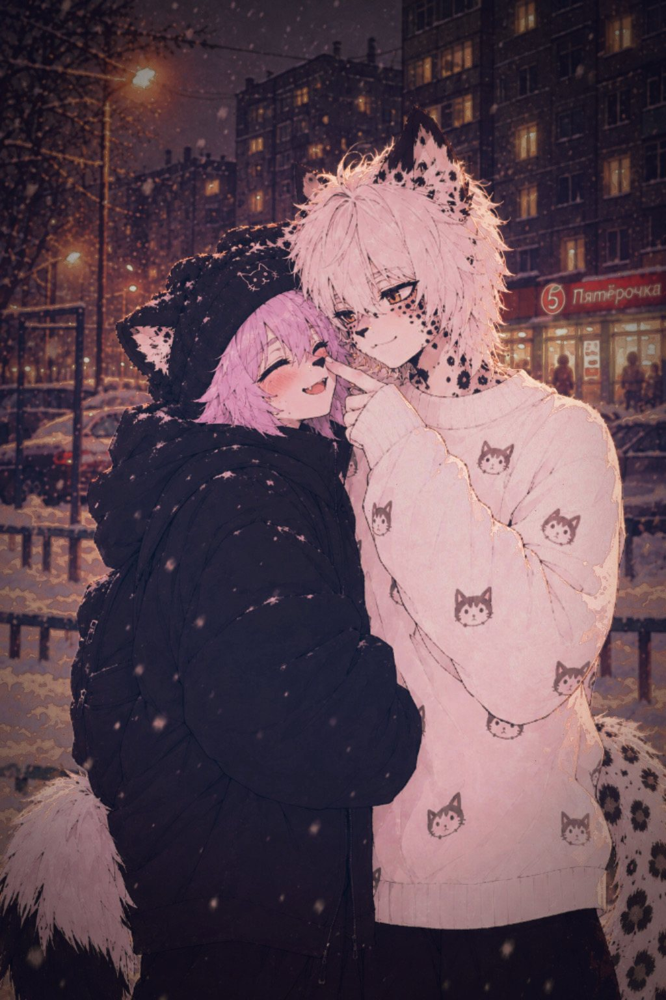
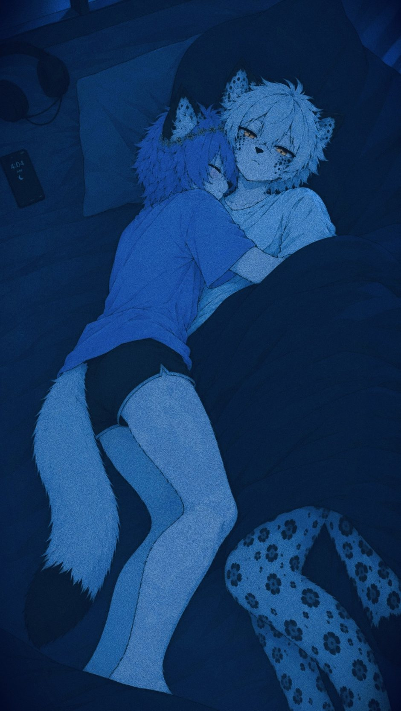

catfox · agent of chaos
Норт ♡
19 лет171 см
Ебанутый, взрывной, весёлый — и самый главный милашка. Лавандовый хаос на лапках, который умеет превратить обычный вечер в маленькое приключение.
любит Ноэля. очень. даже когда вредничает.
маленький уголок интернета для больших чувств, ночных мыслей и гитар, которые звучат громче будильника.
Здесь живут два пушистых идиота, британский рок и немного лавандового беспорядка. Располагайся.

Два девятнадцатилетних комка чувств. Один устраивает хаос, второй делает вид, что полностью контролирует ситуацию. Ни у кого не получается.
Ебанутый, взрывной, весёлый — и самый главный милашка. Лавандовый хаос на лапках, который умеет превратить обычный вечер в маленькое приключение.

Обаятельный снежный барс: умнее, серьёзнее и будто бы взрослее. Терпеливый ровно до момента, когда Норт начинает испытывать его терпение ради развлечения.
Небольшой фотоальбом из их мира. Нажимай на кадр, чтобы посмотреть поближе.
Без фурри, без лишнего лора — только британские гитары, обложки, меланхолия и тот самый вайб, когда хочется смотреть на горизонт и чувствовать себя героем клипа 1996 года.
Oasis — это не просто группа. Это режим работы души: madferit, громко и без извинений.
Меняй местами соседние плитки, собирай по три одинаковых символа и набирай очки. В этой версии пиксельные значки — маленькие коллекционные дропы.
Собери три одинаковых мордочки в ряд — горизонтально или вертикально. За совпадение начисляются очки. Попробуй выбить личный рекорд!
Подсказка: сначала выбери плитку, затем соседнюю. Если ход не создаёт совпадение, плитки вернутся назад.
Выбери две соседние плитки.
✦ Собирай значки, береги нервную систему Ноэля.
Для разговоров о музыке, артах, персонажах и прочей прекрасной ерунде. Пиши — если я не сплю под Oasis.